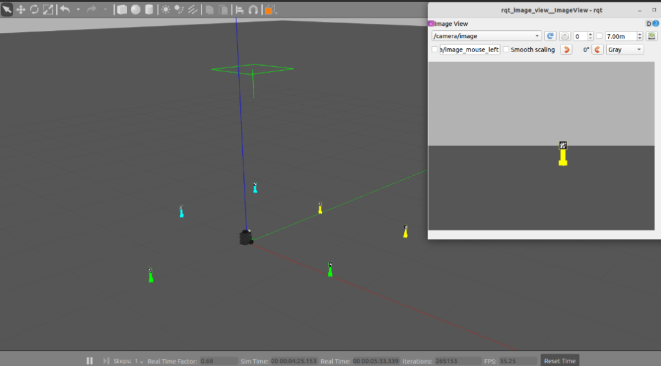

Robótica Computacional 2024.1 - Prova Final
Observações de avaliações nesta disciplina:
- A prova tem duração de 4 horas.
- Inicie a prova no Blackboard para a ferramenta de Proctoring iniciar. Só finalize o Blackboard quando enviar a prova via Github classroom.
- Durante a prova vamos registrar as páginas visitadas e acessos online e o teclado.
- Coloque seu nome e email no README.md do seu repositório.
- Você pode consultar a internet ou qualquer material que utilizado no curso, mas não pode se comunicar com pessoas ou colegas a respeito da prova em qualquer plataforma.
Não é permitido o uso de ferramentas de **IA** como chatGPT, Copilot ou similares durante a prova.- Faça commits e pushes frequentes no seu repositório.
- Eventuais avisos importantes serão realizados em sala durante a prova.
- A responsabilidade por infraestrutura, configuração e setup em funcionamento pleno, é de cada estudante.
- Elementos da rúbrica com
(chkp)podem ser utilizados como comprovação de nota parcial, caso o exercício não esteja completo. Para a nota completa, pode ignorar esses elementos.
Atualização dos Pacote (ROS 2)
Execute os comandos abaixo para atualizar os pacotes da ros2 obrigatórios para a prova:
cd ~/colcon_ws/src/my_simulation
git stash
git pull
cd ~/colcon_ws/src/insperbot
git stash
git pull
cb
Configuração do Pacote (ROS 2)
-
Preparação Inicial: Primeiro, aceite o convite do GitHub Classroom e clone o repositório dentro da pasta
colcon_ws/src/no seu SSD. -
Criação do Pacote ROS 2: Dentro do diretório do seu repositório, crie um novo pacote chamado
avaliacao_af.- Dica: Para utilizar os modulos desenvolvidos no módulo 3, inclua o pacote
my_packagecomo dependência do seu pacote, e então, importe como nos exemplos do módulo 3.
- Dica: Para utilizar os modulos desenvolvidos no módulo 3, inclua o pacote
Escreva a letra B como a resposta da soma no arquivo README.md como teste de sua atenção.
Exercício 1 (5)
Baseando-se no código base_control.py do módulo 3, crie um arquivo chamado q1.py contendo uma classe denominada SegueComando. Esta classe deve implementar um nó chamado segue_comando_node, responsável por fazer com que o robô simulado siga a linha amarela até completar uma volta, depois deve girar 360 graus e escolher um animal aleatório. O robô deve então se mover diretamente para a caixa do animal escolhido e seguir a linha correspondente ao animal escolhido até completar uma volta na nova pista.
Utilize o comando abaixo para iniciar o simulador no mapa da prova:
ros2 launch my_gazebo retangulos.launch.py

O nó criado deve:
- Seguir a linha amarela até completar uma volta na pista.
- O ponto de inicial deve ser considerado como referência para a volta completa.
- Girar 360 graus e selecionar um animal aleatório de uma lista contendo:
['cachorro', 'gato', 'cavalo'].- Imprimir o animal escolhido.
- Procurar a caixa com o animal, movendo-se diretamente para ela.
- Mova-se e centralize a caixa no campo de visão do robô.
- Parar próximo à caixa correspondente ao animal recebido.
- Começa a seguir linha da cor correspondente ao animal recebido:
- Cachorro: linha magenta (superior esquerda)
- Gato: linha verde (superior direita)
- Cavalo: linha azul (inferior direita)
- Da uma volta completa na nova pista e para.
- O ponto de entrada na nova pista deve ser considerado como referência para a volta completa.
Restrições
- Deve existir o arquivo chamado
q1.py. - O programa deve ser executado sem erros.
- A classe deve se chamar
SegueComando. - A implementação deve seguir a estrutura da classe
SegueComando, conforme exemplo nobase_control.py. - A função
controldeve ser a única a publicar no tópico/cmd_vel. - A função
controldeve ser idêntica à do arquivobase_control.py. Todas as decisões de controle devem ocorrer dentro dos nós, sem alterações na funçãocontrol. - Não utilizar loops infinitos ou
sleepdurante o controle do robô. - Não modifique o mundo de forma manual - deletando ou movendo os creepers.
- Não adicione coordenadas de referência manualmente no código.
- Deve escolher um animal aleatório de uma lista contendo:
['cachorro', 'gato', 'cavalo'].
Rúbrica
- +0,5 - O robô consegue seguir a linha amarela.
- +1,0 - O robô faz uma volta completa na pista amarela e depois gira 360 graus e para.
- (chkp) O robô faz uma volta completa na pista amarela e depois gira 360 graus e para.
- +1,0 - O robô está processando a rede neural para identificar os animais nas caixas.
- (chkp) Em qualquer outro vídeo - mostre a visão do robô com as caixas de identificação dos animais.
- +1,5 [1;2;3] - Depois de girar 360 graus o robô escolhe um animal aleatoriamente, imprime no terminal, e então se move diretamente para a caixa correspondente ao animal, parando bem próximo.
- (chkp) O robô se move diretamente para a caixa correspondente ao animal e para.
- +1,0 [4] - O robô segue a linha do animal corretamente, dá uma volta completa, com base de onde começou, e para.
Desafios
- +1,0 - O robô sempre segue a linha no mesmo sentido, independente da pista.
- Por padrão, o robô seguiria a linha amarela no sentido anti-horário.
- (chkp) Mostre o robô executando o comportamento completo com essa adição.
Vídeo
Grave um vídeos, mostrando um terminal echoando o tópico /animal e mostrando que o robô é capaz de realizar o comportamento completo ou algum comportamento parcial. Publique os vídeos no YouTube e inclua apenas o link no arquivo README.md do seu repositório.
Exercício 2 (5)
Baseando-se no código base_control.py do módulo 3, crie um arquivo chamado q2.py contendo uma classe denominada Sicario. Esta classe deve implementar um nó chamado sicario_node, responsável por fazer com que o robô simulado se inscreva em um tópico /comando e publique para o mesmo tópico /comando uma string contendo pronto. O robô então recebe uma string contendo cor_id. O robô deve então se mover para o creeper, girar 360 graus e retornar à posição inicial, publicando para o tópico /comando a string finalizado.
Utilize o comando abaixo para iniciar o simulador no mapa da prova:
ros2 launch my_gazebo reuniao.launch.py

O nó criado deve:
- Se inscrever no tópico
/comandoe publicar a stringprontono tópico/comando. - Receber a string
cor_ide imprimir a cor recebida. - Identificar os creepers por cor e id.
- Se mover para o creeper
- Girar 360 graus
- Avançar em cima do creeper e ao derrubá-lo, retornar à posição inicial e publicar a string
finalizadono tópico/comando.
Restrições
- Deve existir o arquivo chamado
q2.py. - O programa deve ser executado sem erros.
- A classe deve se chamar
Sicario. - A implementação deve seguir a estrutura da classe
Sicario, conforme exemplo nobase_control.py. - A função
controldeve ser a única a publicar no tópico/cmd_vel. - A função
controldeve ser idêntica à do arquivobase_control.py. Todas as decisões de controle devem ocorrer dentro dos nós, sem alterações na funçãocontrol. - Não utilizar loops infinitos ou
sleepdurante o controle do robô. - Não modifique o mundo de forma manual - deletando ou movendo os creepers.
- Não adicione coordenadas de referência manualmente no código.
Rúbrica
- +0,5 - O robô publica a string
prontono tópico/comando.- (chkp) O robô publica a string
prontono tópico/comando.
- (chkp) O robô publica a string
- +0,5 [1] - O robô se inscreve no tópico
/comandoe recebe a stringcor_id.- (chkp) Ao receber a string
cor_idimprime a cor recebida.
- (chkp) Ao receber a string
- +1,0 - O robô consegue identificar os creepers por cor e id.
- (chkp) Gire o robô mostrando a visão do robô identificando os creepers por cor e id.
- +1,0 [1;2;3] - O robô se move para o creeper e centraliza o creeper no campo de visão.
- (chkp) O robô se move para o creeper e centraliza o creeper no campo de visão e para.
- +1,0 [1;2;3;4] - O robô girar 360 graus e retorna e para na posição inicial.
- +1,0 - Depois de girar 360 graus, o robô avança em cima do creeper e ao derrubá-lo, retorna à posição inicial e publica a string
finalizadono tópico/comando.- (chkp) Mostre o robô executando o comportamento completo com essa adição.
- -1,0 - (Penalização) O robô consegue identificar apenas a cor dos creepers, executando o comportamento para um creeper arbitrário da cor correta.
- (chkp) Mostre o robô executando o comportamento completo mesmo que com um creeper arbitrário da cor correta.
Vídeo
Grave um vídeos, mostrando um terminal echoando o tópico /comando e mostrando que o robô é capaz de realizar o comportamento completo ou algum comportamento parcial. Publique os vídeos no YouTube e inclua apenas o link no arquivo README.md do seu repositório.